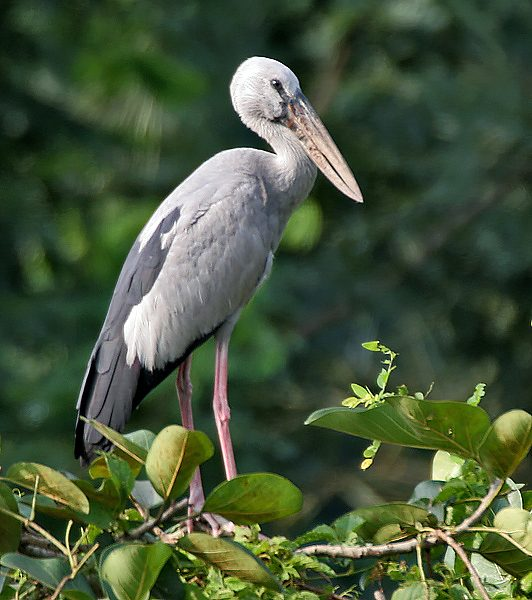

घोंघिलAsian Openbill
Anastomus oscitans · Ciconiidae · BRD-0021

- Scientific name
- Anastomus oscitans (Boddaert, 1783)
- Family
- Ciconiidae
- Hindi
- घोंघिल
- Status here
- native
- IUCN
- LC
When to look कब देखें
Present all year.
घोंघिल / Asian Openbill
Anastomus oscitans (Boddaert, 1783) — Ciconiidae
घोंघिल — हमारे आर्द्रभूमियों, तालाबों और बाढ़ वाले धान के खेतों में पाया जाने वाला एक मध्यम आकार का सफेद-धूसर रंग का बगुले जैसा दिखने वाला सारस (stork) है। इसकी सबसे अनूठी विशेषता इसकी भारी, पीली-धूसर चोंच है, जिसके दोनों हिस्सों (mandibles) के बीच वयस्क होने पर एक स्पष्ट खाली स्थान या अंतराल (gap) बन जाता है। यह अंतराल दलदली मिट्टी में रहने वाले घोंघों को पकड़ने और उनका कवच तोड़े बिना मांस बाहर निकालने के लिए एक विशेष प्राकृतिक औजार की तरह काम करता है। ये पक्षी झीलों और तालाबों के पास ऊंचे पेड़ों पर बड़ी कॉलोनियों (heronries) में घोंसले बनाते हैं, और मानसून के समय इनकी गतिविधियों में काफी तेजी देखी जाती है।
Quick Identification त्वरित पहचान
| Feature | Description |
|---|---|
| Size | Medium-sized stork (around 68–81 cm total length; 147–149 cm wingspan) with long greyish-pink legs |
| Plumage | Glossy white or light grey body plumage; contrasting jet-black flight feathers and tail |
| Bill | Large, dull yellowish-grey bill; adults have a diagnostic gap (open space) between the closed mandibles |
| Eyes & Skin | Dark brown or hazel irises; facial skin is blackish-grey and naked around the eyes and throat |
| Behaviour | Wades slowly in shallow water; nests colonially in large groups on tall trees |
Field tip: Look for them foraging in shallow village ponds or freshly flooded paddy fields. The distinct gap in the bill is easily visible through binoculars when the bird is in profile. In flight, they fly with their neck fully extended, unlike herons.
Morphology आकारिकी
Biometrics (typical measurements in the northern Indian plains):
| Measurement | Range |
|---|---|
| Total length | 680–810 mm |
| Wing (flattened chord) | 390–450 mm |
| Tail | 180–210 mm |
| Tarsus | 140–180 mm |
| Bill (culmen from base) | 145–190 mm |
| Weight | 1300–1900 g |
Plumage: In the breeding season, the body plumage is largely white, sometimes with a faint greyish-pink tinge on the back. The scapulars, primary and secondary flight feathers, and the tail are black with a dark green or purple sheen. In the non-breeding season, the white parts of the body turn a dull sandy-grey. Juveniles lack the pure white plumage, showing grey-brown streaks on the neck and head, and their bill mandibles do not yet have the gap.
Bare parts: The bill is heavy, yellowish-grey or dull horn-coloured. The facial skin is bare and blackish. The long legs and feet are dull pinkish or flesh-coloured, turning brighter red during courtship. The irises are brown or greyish-white.
Vocalisations
Asian Openbills are generally silent birds outside the breeding colonies.
- At the nest: They produce loud, mechanical bill-clattering (sound produced by snapping the upper and lower bill together rapidly) during courtship and greeting displays.
- Alarm call: A low, guttural croaking or grunting karr-karr (around 0.5 to 1.0 kHz), uttered when defensive at the nest or during disputes over nesting material.
Ecological Role पारिस्थितिक भूमिका
Wetland molluscivore. The Asian Openbill is a specialist feeder on freshwater mollusks.
- Ecological regulator: By feeding predominantly on large freshwater snails, they regulate the populations of mollusks in seasonal wetlands and paddy fields.
- Colonial nester: Their large colonial nesting sites (heronries) enrich the local soil and water with nutrient-rich droppings (guano), promoting aquatic plant growth and insect diversity in the wetland ecosystem.
Life Cycle / Phenology जीवन चक्र
- Breeding season: June to October, coinciding with the Southwest Monsoon and paddy transplantation, which increases freshwater snail availability.
- Nesting: They nest colonially in large trees (such as peepal, mango, neem, or tamarind) near or standing in water. A single tree can host up to 30–50 nests, often shared with other storks, herons, and egrets.
- Nest structure: A large platform of twigs, lined with green leaves and aquatic vegetation to keep the interior moist. Both parents collect twigs and build the nest.
- Clutch size: 2 to 4 dull white, oval eggs.
- Incubation: 25–30 days, shared by both parents.
- Fledging: Nestlings are altricial (naked and helpless) at birth and are fed regurgitated snail pulp by both parents. They fledge and leave the nest in about 50–55 days.
Host Plants or Prey आहार
Primary food items:
- Mollusks: Feeds almost exclusively on the large Freshwater Apple Snail (Pila globosa, MOL-0001). They also eat freshwater mussels (Lamellidens spp.).
- Other aquatic animals: Occasional small frogs, crabs, large water insects, and small fish when snails are scarce.
Predators / Natural Enemies शत्रु
- House Crow (Corvus splendens) and Black Kite (Milvus migrans) — steal eggs and small chicks when nests are left unattended.
- Bengal Monitor (Varanus bengalensis) — climbs nesting trees to raid clutches.
- Large raptors (such as Eagle species) — occasionally hunt fledglings at nesting colonies.
Agricultural / Human Relevance कृषि प्रासंगिकता
Biological pest controller. The apple snails (Pila globosa) they consume are known vectors of parasites and can damage young rice shoots. By foraging in flooded paddy fields, Openbills perform an invaluable organic service for farmers by reducing snail populations without chemical pesticides.
Coexistence. Farmers in eastern UP welcome the arrival of these birds in their fields, as their presence is traditionally associated with a healthy monsoon and a good crop harvest. Tall trees near village ponds are often protected by villagers to host nesting colonies year after year.
Expected Locally स्थानीय रूप से अपेक्षित
Not a field record. Written from published accounts for eastern Uttar Pradesh. No confirmed local sighting yet — if you have seen it, that is what the atlas needs.
अभी तक स्थानीय पुष्टि नहीं। यह विवरण प्रकाशित स्रोतों से है, किसी अवलोकन से नहीं।
A common resident in Basti and Ayodhya, showing high local movements during the monsoon. Large breeding colonies are found in village ponds surrounded by mature tamarind (Tamarindus indica) and peepal trees (Ficus religiosa). The Saryu riverbanks and associated marshy depressions are key feeding grounds where flocks of 20–50 birds can be seen foraging in shallow muddy patches.
Distribution वितरण
Global range: Widespread across the Indian subcontinent and Southeast Asia, including Pakistan, India, Nepal, Sri Lanka, Bangladesh, Myanmar, Thailand, Cambodia, Laos, and Vietnam.
In India: Widespread in the plains, from the foothills of the Himalayas to southern India, avoiding hyper-arid desert regions.
In Uttar Pradesh: A common resident and breeder across all major river basins and wetland-heavy districts.
In Basti district / eastern UP: Highly visible in seasonal marshes, water-logged agricultural pockets, and along the Ghaghara and Kuwano rivers.
Range notes: Local nesting sites are dependent on the preservation of large mature trees and wetland health.
Research Questions शोध प्रश्न
Anyone can investigate these | कोई भी इन प्रश्नों की जाँच कर सकता है
- How many active nests can be counted in a single breeding tree in your village, and which tree species are most preferred? / आपके गाँव में एक ही पेड़ पर घोंघिल पक्षी के कितने सक्रिय घोंसले हैं, और वे किस पेड़ को सबसे अधिक पसंद करते हैं? — Catalog local heronry trees and count nests.
- What is the success rate of Asian Openbill feeding attempts on Freshwater Apple Snails in muddy vs. clear water? — Record foraging success in different water clarities and depths.
- How does the presence of an Openbill colony on a village tree affect the growth of vegetation underneath? / गाँव के पेड़ पर घोंघिल पक्षी की कॉलोनी होने से उसके नीचे की वनस्पतियों के विकास पर क्या प्रभाव पड़ता है? — Compare soil nutrients and plant growth under nesting vs. non-nesting trees.
- At what age do young Openbills develop the characteristic gap in their bill? — Observe and photograph fledglings at the colony to map bill development.
- How far do Openbills travel from their nesting colony to forage in paddy fields during the day? — Track flight paths of foraging adults from a central heronry.
Similar Species मिलती-जुलती प्रजातियाँ
| Species | How to tell apart | हिंदी |
|---|---|---|
| Woolly-necked Stork (Ciconia episcopus) | Black body; white neck; red legs; lacks the gap in the bill; solitary or in pairs | ऊनी-गर्दन सारस — काली पीठ और सफेद गर्दन |
| Black-necked Stork (Ephippiorhynchus senegalensis) | Much larger; black head and neck; huge black bill; bright red legs; no gap in bill | लोहजंघ सारस — बहुत बड़ा आकार और काली गर्दन |
| White Stork (Ciconia ciconia) | Pure white body; black flight feathers; bright red bill with no gap; winter visitor | सफेद सारस — लाल चोंच और चोंच में अंतर का अभाव |
Field rule: Medium stork size, white/grey body with black wings, dull yellowish bill with a prominent central gap in adults, and long pinkish-grey legs identify the Asian Openbill.
Taxonomy & Classification वर्गीकरण
Original description. Pieter Boddaert described the Asian Openbill as Ardea oscitans in 1783 in his work Table des planches enluminéez d'histoire naturelle de M. D'Aubenton (p. 55). The type locality is Pondicherry, India. The genus name Anastomus is derived from the Greek anastomoo (to furnish with a mouth/opening), referring to the gap in the bill, and the specific name oscitans is Latin for "gaping" or "yawning".
Subspecies. The species is monotypic; no subspecies are currently recognised.
Family and order placement. Placed in the order Ciconiiformes, family Ciconiidae (storks). Ciconiidae is a small family of 19 species of large wading birds characterized by long necks, long legs, and stout bills.
Phylogenetic notes. The genus Anastomus contains only two species: the Asian Openbill (Anastomus oscitans) and the African Openbill (Anastomus lamelligerus). They represent a specialized evolutionary line adapted for feeding on hard-shelled mollusks.
IUCN status rationale. Listed as Least Concern (LC). The population is stable and wide-ranging. It adapts well to agricultural wetlands like paddy fields, which provide abundant prey.
Photo Gallery फोटो गैलरी
References संदर्भ
- Boddaert, P. (1783). Table des planches enluminéez d'histoire naturelle de M. D'Aubenton. p. 55.
- Ali, S. & Ripley, S.D. (1999). Handbook of the Birds of India and Pakistan. Vol. 1. Oxford University Press, New Delhi.
- Grimmett, R., Inskipp, C. & Inskipp, T. (2011). Birds of the Indian Subcontinent. 2nd ed. Christopher Helm, London.
- Kahl, M.P. (1971). Food and feeding behavior of Openbill Storks. Journal of the Bombay Natural History Society, 68(2), 372-378.
- BirdLife International (2024). Anastomus oscitans. IUCN Red List of Threatened Species. Ver. 2024.
- GBIF Occurrence Data — Anastomus oscitans, Uttar Pradesh (2010–2025).
Source file: species/fauna/birds/asian_openbill.md